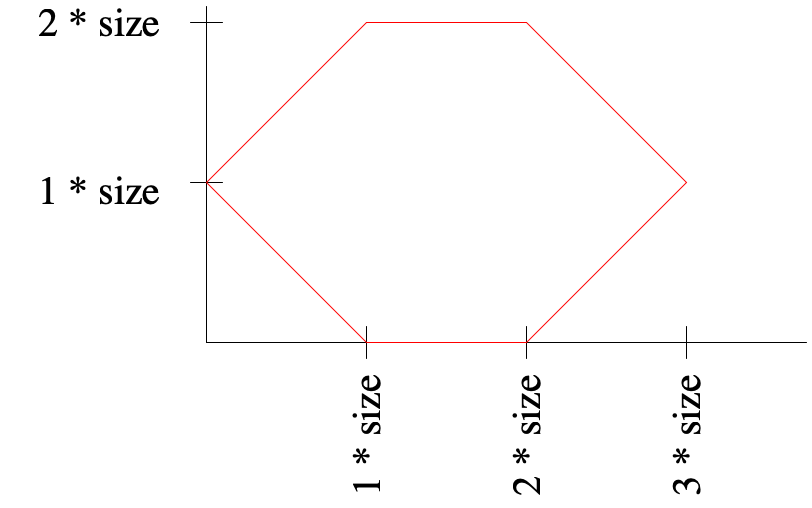
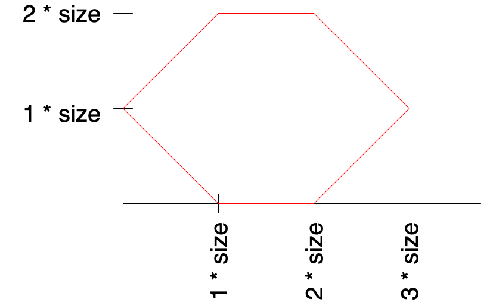
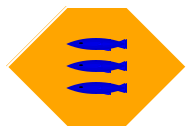
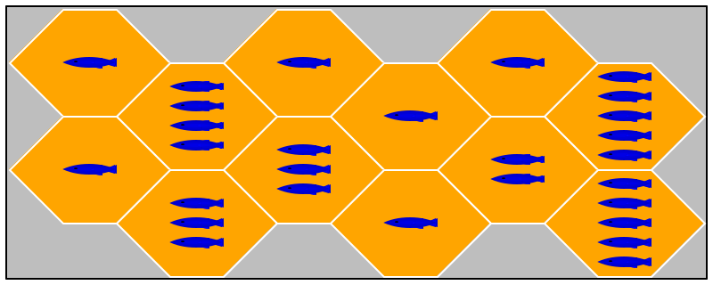
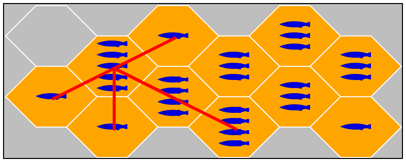
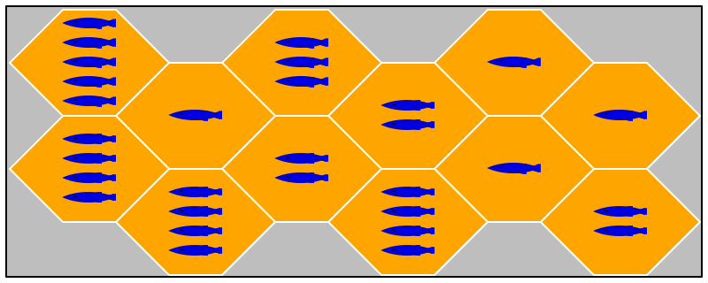
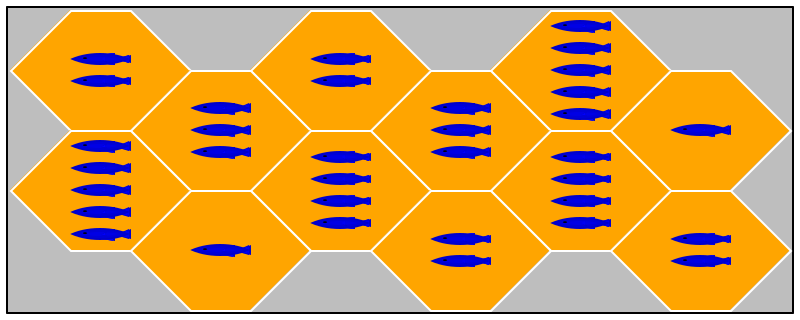
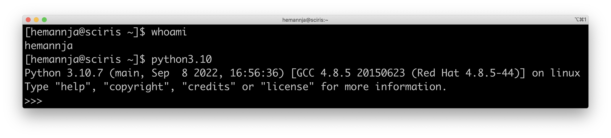
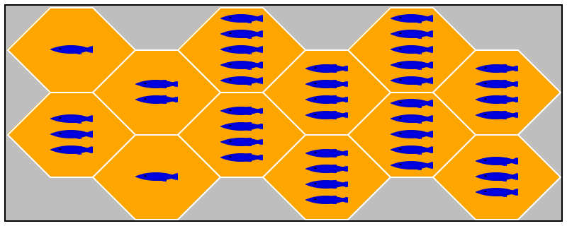
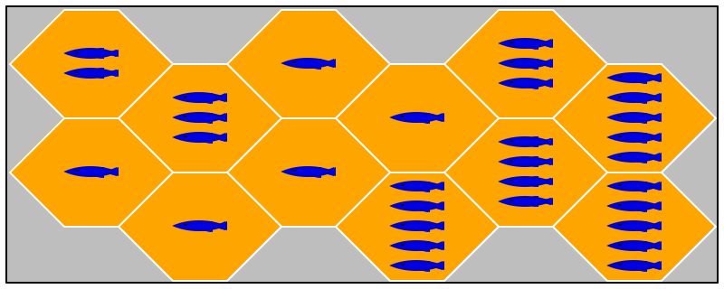

Software Engineering

I expect you to visit this page at least once per 24 hours.
 Mon, November 14, 2022 6:00:29 PM
Mon, November 14, 2022 6:00:29 PM
Some of you might be missing a good model for how to apply the design recipe in OO-style programming. Python does offer first-class functions and lambda. However, if the library you are having to use is implemented as an OO library, you will need to know how to write well-designed OO code using such a library. GUI components are a canonical use-case where an OO design makes sense. I suggest you skim over the draft of "How to Design Classes", specifically §16, on pg 173 (185 of the PDF).

Mon, November 14, 2022 1:30:50 PM
Warning: these are not exactly the rules by which we’re playing or the design of the game I’ve asked you to build. However you might find it’s fun to see roughly what a two-player version of the game is like. You can play this version of fish on desktop or in the browser. You might be surprised how tough it can be to beat a children’s game.

Sat, November 12, 2022 5:45:20 PM
A student asked for an explanation of the .PP naming convention. This has been clarified for you. In general, when you see purple or red-colored text in an assignment description, this will connote for you a clarification, change or correction to that portion of the description.

Mon, November 7, 2022 5:59:42 PM
Those of you who developed your application expecting tkinter may yet be in luck. If you do not depend on python 3.6 specifically, here is a way to get tkinter to work on sciris.
[hemannja@sciris ~]$ python3.4 |
Python 3.4.10 (default, Jun 23 2021, 22:06:51) |
[GCC 4.8.5 20150623 (Red Hat 4.8.5-44)] on linux |
Type "help", "copyright", "credits" or "license" for more information. |
>>> import tkinter as tk; window = tk.Tk() |
You have your sysadmin to thank for this.

Sun, November 6, 2022 3:48:07 PM
Those of you who are still pursuing a GUI solution for python might consider using the PyQT library, since that comes installed on sciris with our version of python3. I have no experience using it besides the following, nor have I built the project using it in python, but this may be sufficient for your needs. I have gone as far as to try the basic example.

Sun, November 6, 2022 9:39:30 AM
A student writes with the following question.
[W]hen the assignment states to be able to "remove tiles", I am trying to understand what that means exactly. Before rendering the board, am I specifying the specific tile(s) I want to remove? Or, am I specifying an amount of tiles I want to remove (which can then be removed randomly).
You should implement some functionality to, given a board and a coordinate, return a board missing a tile at that coordinate. This is the general functionality you will want to have.
Produce an initial board with n tiles removed (by randomly selecting n distinct coordinates, building a full board, and removing those tiles in sequence.)
Build an initial board with a specific set of coordinates missing their tiles (by taking as input a missing-tiles-list, and building a full board then removing each of those tiles one after another).
These are of course only a couple of examples.

Wed, November 2, 2022 6:10:16 PM
A student pointed out on Monday that I had accidentally given you an extra six days for this first assignment. It was intended to be due on Nov 1, but due to my carelessness and inability to read my own writing (as well as to implement sufficient checks in my VCS) you all have until the 7th of November. Please make great use of that additional time.

Fri, October 21, 2022 4:54:33 PM
In my in-class presentation, I neglected to mention to you an
additional facet of the overall system I envision. Both your
architecture and your plan should accommodate this idea. As another
way to make some money for our business, we will have our own "house
AI" based players—

Fri, October 21, 2022 11:53:22 AM
I know many of you are new to programming in a Unix environment. Some
of you probably wanted to be directed to a more didactic resource with
some expository background. If you are not already familiar with these
systems—

Sat, October 15, 2022 5:54:19 PM
Recall that, in our in-class discussion of netcat and TCP
communication, I had us look up our internal IP addresses. Please see
E —
This post recapitulates some of what we saw in class w/tcp
communication over netcat, and also explains why you might have
some difficulties trying this at home. You should try this at home,
and get it to work—
On a computer with internal IP address 2.3.4.5, I typed the following:
$ nc -l 3000 |
That commands tells this terminal session to start a program on this computer to listen for traffic on port 3000. You Windows people had to use Ncat.exe, I believe.
On another computer, I typed:
$ printf "foobar" | nc 2.3.4.5 3000 |
This command sends the string "foobar" addressed to IP address 2.3.4.5, on port 3000.
Recall I said internal IP address. Internal, in contrast with
external IP addresses. Your own home wireless network has
your devices connected to it—
Each of those networks—
So, those of you who are listening for incoming TCP connections on your local home network may need to do some configuring of your router to make sure that your router knows to forward traffic on whatever port your partner is communicating to your machine.

Wed, October 12, 2022 7:43:28 PM
As per our in-class discussion, please notice that the due date for
E —
In class we left open a discussion of how to redirect IO in the standard Windows cmd shell. I link here to all the information you would require, and then some (follow the link labeled "Redirection").

Wed, October 5, 2022 8:39:12 PM
As per our in-class discussion, please notice that the due date for
E —

Tue, October 4, 2022 9:26:27 AM
The transformation of textual information into internal
data is known as parsing, a technical problem that spawned an
entire research area. Parsing is so complex, it should never be used
in an introductory course but to this day, many such courses assign
programs that read text, analyze it, and react to it—
At first glance, JSON is a simple notation for writing down information in terms of Booleans, Strings, Numbers, arrays of JSON expressions, and objects of JSON expressions. But, as it turns out, turning JSON information into internal data is a minefield; indeed, no two JSON parsers seem to accept the same JSON inputs.
You should keep this fact in mind for your upcoming co-ops, internships, and future employment.

Tue, October 4, 2022 9:26:27 AM
You will notice that your next assignment is now out. You should get started on this immediately, as I expect it will take many of you more time than you anticipate to properly complete.

Fri, September 23, 2022 1:45:55 PM
You will notice that I have (in part retroactively) extended the due dates for xjson and xgui. In all, you will have had more than two weeks extension for an ~20 line program. We must do better than this.

Thu, September 22, 2022 9:55:29 AM
our test harness does not run make unless there is a Makefile
an executable shell script must start with a #! because it won't run as a subprocess otherwise.

Thu, September 22, 2022 9:45:22 AM
This note specifically regards our discussion of ^D ("control D") from yesterday’s lecture, which transmits eof. If this is all new to you, I suggest you read this friendly article introducing these sequences.
A unix shell is incredibly powerful for such a small tool: it is effectively a little line-editor right there in the terminal.
The stty command lets you investigate and configure the behavior of your terminal. To learn about all the control sequences you have available, you can execute the same command as I do below:
|
[hemannja@sciris ~]$ stty -a |
speed 9600 baud; rows 74; columns 255; line = 0; |
intr = ^C; quit = ^\; erase = ^?; kill = ^U; eof = ^D; eol = M-^?; eol2 = M-^?; swtch = <undef>; start = ^Q; stop = ^S; susp = ^Z; rprnt = ^R; werase = ^W; lnext = ^V; flush = ^O; min = 1; time = 0; |
-parenb -parodd -cmspar cs8 -hupcl -cstopb cread -clocal -crtscts |
-ignbrk -brkint -ignpar -parmrk -inpck -istrip -inlcr -igncr icrnl ixon -ixoff -iuclc ixany imaxbel iutf8 |
opost -olcuc -ocrnl onlcr -onocr -onlret -ofill -ofdel nl0 cr0 tab0 bs0 vt0 ff0 |
isig icanon iexten echo echoe -echok -echonl -noflsh -xcase -tostop -echoprt echoctl echoke |
|
To learn more about what the stty command can do for you, of course, you should consult the manual.

Tue, September 20, 2022 9:12:14 PM
A student writes by email:
How again do I XYZ? |
|
Finally, can you walk me through the full process of PQR and then ABC? |
For what I deem straightforwardly technical questions, I am unlikely to give you satisfying answers to such questions. In general, I can likely tell you how to do all of these things. Easily and quickly. Either because I know from having already had to look it up and see, or because I can quickly do so. Instead, I want you (together with your partner) to go find out the answers, and resolve these issues yourselves.
I want you to practice this meta-skill of learning technical skills, and I want you to practice so that you can do it quickly. That is a more important than the solution to XYZ or the steps to PQR or ABC.
Your employer will not expect you to know the ins and outs of every foobar software product. Your employer should be able to expect you to pick it up on your own by reading, searching the internet, experimenting and debugging.
If you find yourself in this situation, you might start by typing into your search engine the question that you were going to ask your instructor, and then refine it from there. Of course, if you don’t know the right way to ask for help on the internet, ask the internet how to do so.

Wed, September 14, 2022 7:49:44 PM
You will notice that I have (in part retroactively) extended the due dates for xyes and xjson.

Mon, September 12, 2022 7:32:39 PM
Please notice that I added pages to the website discussing your lab books, as well as details on the roles for panelists and how I will assess your activity in each of those roles. You should find these on the lefthand side of the page.

Mon, September 12, 2022 5:45:55 PM
In class today we discussed possibly needing to set a local SSH key. You can, as we discussed use the GIT_SSH_COMMAND environment variable with your commands. This will become tiresome. In your repository’s .git directory you will find a config file. You can edit this file by hand to add the key core.sshCommand and the associated correct value. It’s probably safer to use the git config command (presumably with the --local flag if this is not your usual SSH key).

Fri, September 9, 2022 3:10:08 PM
FYI to the Pythonistas out there, sciris already has Python version 3.6.8 available to you, via the python3 command (this is a pretty common practice). However, I went ahead and build and installed Python 3.10.7 entirely in my own user-directory, without root privileges, if for no other reason than to show that you can do it too.


Fri, September 9, 2022 2:46:02 PM Welcome to the Fall 2022 edition of Software Engineering I. As always, we aim to deliver a course that teaches you a lot, not in terms of industrial tools and techniques but for your life as a reflective software developer.
this front page serves as a universal announcement scroll,
the Assignments, Actual page serves as your “task list,” and
a few other pages come online as needed.
